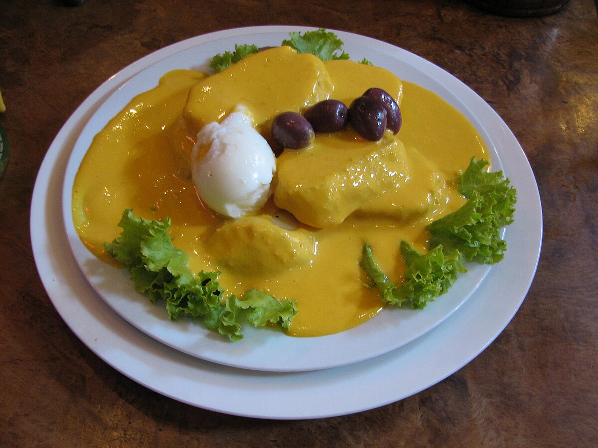

Papas a la Huancaina
Potatoes in spicy cream sauce

Description
Papa a la Huancaina is one of the most popular and representative gastronomic products of Peru. The name Papa a la Huancaina roughly translates to "Potatoes in spicy cream sauce" in English.
Ingredients
- ½ cup aji amarillo paste
- 2 tablespoons vegetable oil
- 1 cup evaporated milk
- 4 soda crackers
- 8 oz. queso fresco (white cheese)
- Salt
- Iceberg lettuce leaves
- 6 yellow potatoes, boiled and peeled
- Black olives
- 3 hard boiled eggs, peeled and cut in slices
- Parsley sprigs
Instructions
- Put the aji amarillo paste in the blender, add oil and milk and process with the crackers, queso fresco, and salt, until smooth.
- In four plates put four lettuce leaves, some thick potato slices, and cover with a few tablespoons of the sauce.
- Garnish with black olives, hard boiled eggs and parsley.